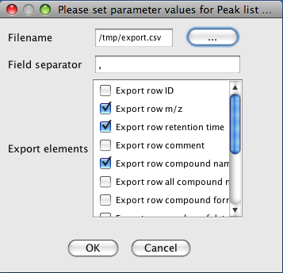

CSV export
Description
This module exports the contents of the peak list into a CSV (Comma-Separated Values) format file, which can later be processed by MS Excel or other tools.
CSV file export is a one-way operation, CSV files cannot be imported back to MZmine.
Missing values such as heights and areas of undetected peaks are exported as 0.
Method parameters
- Filename
- Name of file where the exported data is saved
- Field separator
- Columns in the new CSV file will be separated by this character (typically a comma)
- Export elements
- Please select which columns from the peak list will be exported into the CSV file
- Export all IDs for peak
- If checked, all identification results for a peak will be exported
- Identification separator
- If multiple identification results are available for a peak, these will be separated by this character
